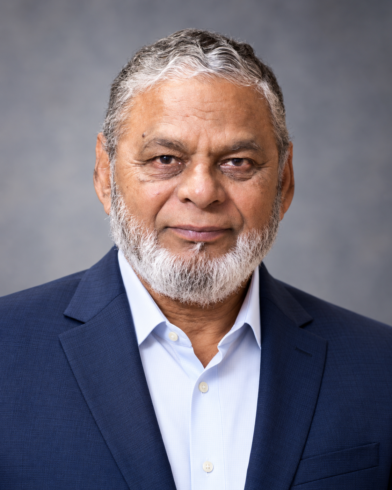

A lifetime of learning.
A thoughtful approach to care.
Meet Prof. Dr. Mohammad Muhiul Haque Siddiqui — Unani physician, educator, and former faculty member of Aligarh Muslim University.

Prof. Dr. Mohammad
Muhiul Haque Siddiqui
BUMMS · M.D. (Ilmul Advia) · M.D. (Moalejat)
Dr. Siddiqui’s academic and clinical interests span Ilmul Advia, Moalejat, and Ilaj-bit-Tadbeer. His background includes teaching, postgraduate supervision, published research, and leadership in Unani medical education.
At Nature’s Cure in Aligarh, his focus is on consultation in Unani medicine and regimenal therapy.
Enquire about a consultationA connection to Aligarh
Born in Lucknow in 1955, Dr. Siddiqui studied at S.T. High School (Minto Circle), Aligarh, before completing his medical education at Aligarh Muslim University. His association with the university has extended from school education to postgraduate study, teaching, and departmental leadership.
Education & academic career
Completed BUMMS at Aligarh Muslim University, Aligarh.
Completed M.D. in Ilmul Advia. Began teaching at Rajasthan Unani Medical College, Jaipur, and subsequently served State Takmil-ut-Tib College, Lucknow, during 1983–1986.
Joined the Department of Moalejat as a part-time Lecturer in 1986, becoming Lecturer in 1988.
Completed M.D. in Moalejat in 1996, became Reader in 1997, and Professor in 2005.
Served as Chairman of the Department of Moalejat at Aligarh Muslim University.
Served as Chairman of the Department of Ilaj-bit-Tadbeer.
Served as Dean, Faculty of Unani Medicine, Aligarh Muslim University.
Teaching, research & clinical interests
His academic work includes postgraduate guidance, research publications, books, and contributions to conferences and professional education. His areas of interest include Ilmul Advia (pharmacology), Moalejat (clinical medicine), and Ilaj-bit-Tadbeer (regimenal therapy).
His particular focus is the study and development of regimenal therapy through academic work, research, and clinical practice.